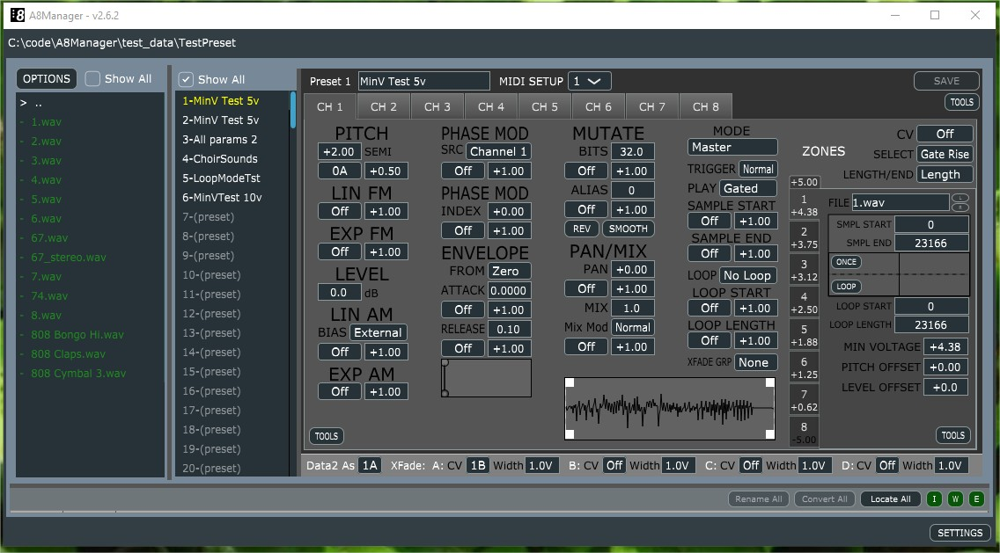
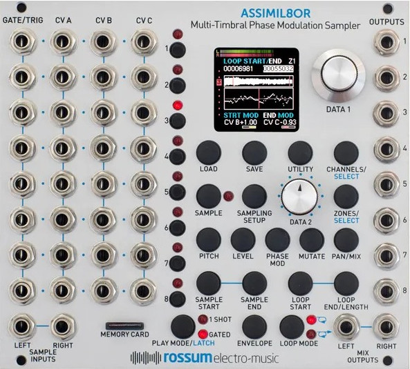

Manage your modules like you have a studio assistant.
Om Ohm Software builds open source, cross-platform desktop editors for popular Eurorack sampler modules — drag-and-drop samples, tweak presets, and fix file-system headaches without fighting tiny screens.
For Assimil8or, Squid Salmple, and WMD Clutch owners on Windows and macOS.
{kind=link}

Everything you need to edit on desktop
Each editor is purpose-built for its module — presets, banks, samples, and settings without the SD-card shuffle.

A8Manager
Preset editor for the Rossum Electro-Music Assimil8or — 8-channel sampling, MIDI setups, and full waveform editing.

SquidManager
Bank editor for the ALM/Busy Circuits Squid Salmple — cue sets, loop tuning, and USB drive management.

ClutchEdit
Editor and sample manager for the WMD Clutch — drag-and-drop samples, audition, and non-destructive HIHAT.INI editing.
The module's missing companion app
Hardware samplers are incredible on stage and in the rack — but editing presets on a module screen is slow. These tools close that gap.
Cross platform
Native editors for Windows and macOS. Download, plug in your card or drive, and start editing.
Open source
Source code on GitHub. Community feedback welcome — bugs get fixed, features get added.
Built for the workflow
Drag-and-drop samples, waveform views, loop markers, file validation, and preset tools — not generic DAW plugins.
Pick your module, download the editor
Free to use. Donations help keep development going.
Choose an editor →Om Ohm Software by Chris Roberts